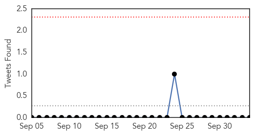
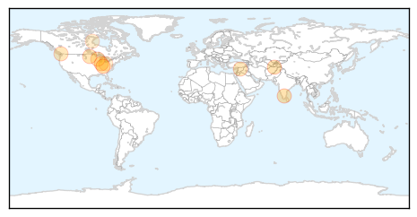
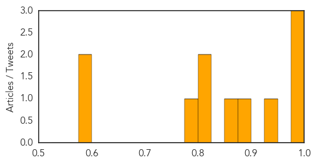
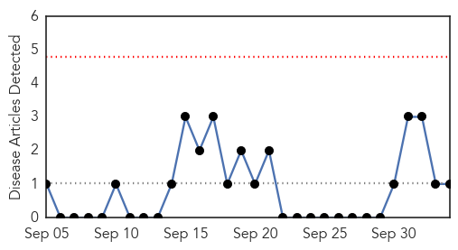
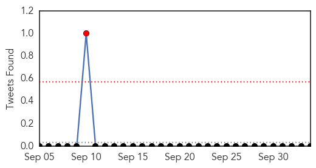

Influenza
30-Day Web Trend
5 alerts, 4 warnings

30-Day Twitter Trend
0 alerts, 0 warnings

Article Locations
Article Confidences
Top Articles:
- 0.999
- WTCA FM 106.1 and AM 1050 The Best, Music, News and Sports
- 0.998
- October Marks Start of Flu Season - Story
- 0.981
- Roll up your sleeve for a flu shot
- 0.934
- 165 hospitals under the scanner
- 0.895
- Today's stories from newspapers in Flamborough
- 0.858
- Flu Vaccine Blitzes in Fargo-Moorhead Start This Week
- 0.806
- Today's stories from newspapers in Caledon
- 0.800
- Today's stories from newspapers in Ottawa
- 0.782
- Eau Claire Leader-Telegram
- 0.584
- Today's stories from newspapers in Halton Hills
- 0.582
- Extension helps in fight against avian flu
Top Tweets:
-
No tweets found for Oct 04, 2015
Mumps
30-Day Web Trend
0 alerts, 0 warnings

30-Day Twitter Trend
1 alerts, 0 warnings

Article Locations
Article Confidences

Top Articles:
Top Tweets:
-
No tweets found for Oct 04, 2015